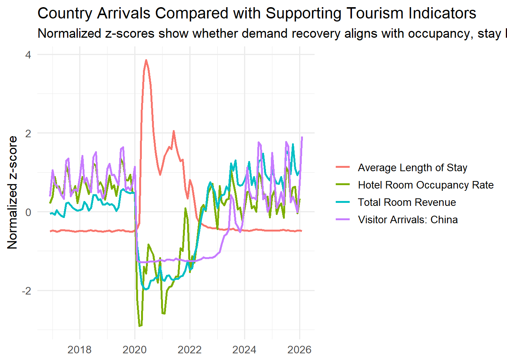
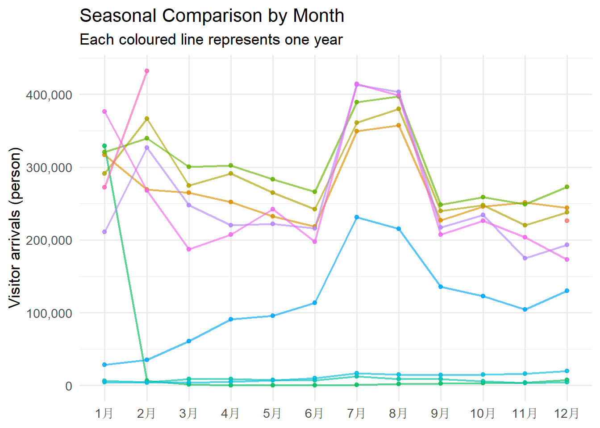
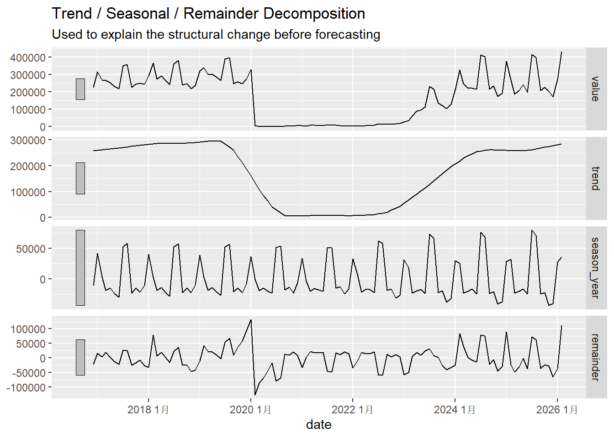
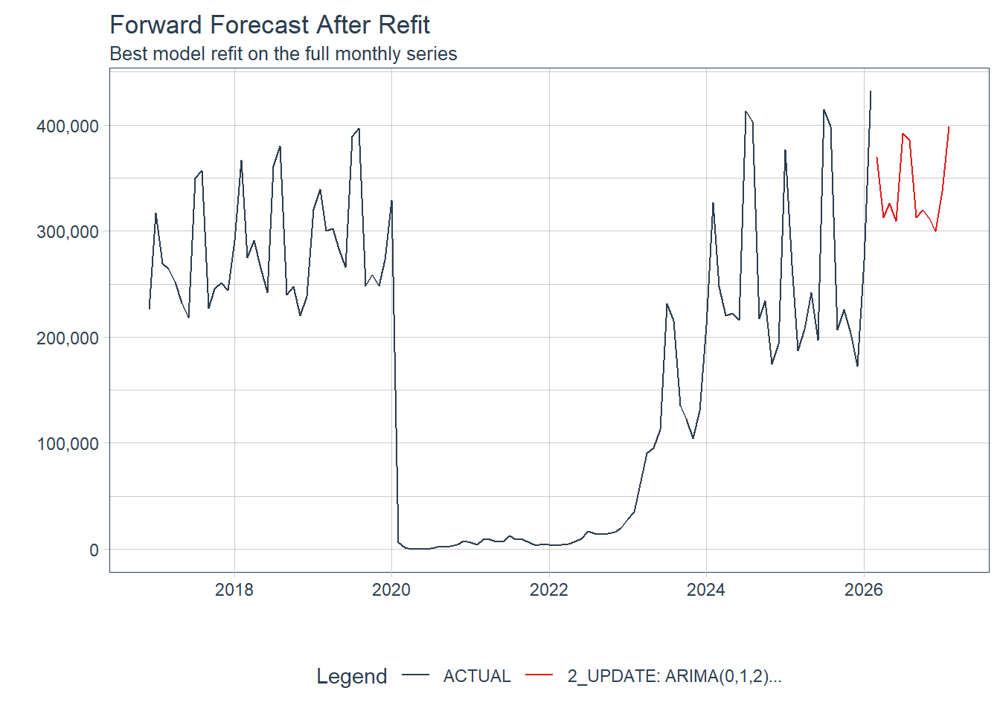
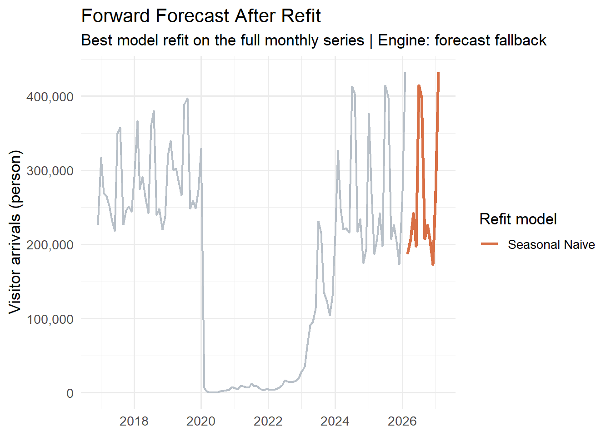

source("../app/R/data_utils.R")
library(dplyr)
library(ggplot2)
library(DT)
library(lubridate)
options(scipen = 999)Module Prototype: Forecasting
Objective
This model first understands the monthly time series pattern, then builds and compares predictive models on the holdout window, and finally refits the best model to generate forward-looking predictions. The general dataset is organized around monthly visitor arrivals by country, while hotel occupancy rates, average length of stay, and room revenue are used as auxiliary indicators to interpret whether the demand recovery is reflected in tourism performance.
Data Contract
Shared arrivals backbone:
data/raw/visitor_arrivals_full_dataset.xlsx
Optional supporting tourism context:
data/raw/tourism_update.xlsx
This prediction prototype narrows the scope of analysis to the monthly visitor arrival sequences by country. Meanwhile, hotel occupancy rates, length of stay, hotel numbers and room revenue will be available as optional supplementary background information.
Examples of eligible target series are:
Visitor Arrivals: ChinaVisitor Arrivals: MalaysiaVisitor Arrivals: IndiaVisitor Arrivals: IndonesiaVisitor Arrivals: AustraliaVisitor Arrivals: Japan
tourism_data <- load_tourism_data()
series_catalog <- list_country_arrival_series(tourism_data$long_monthly)
head(series_catalog, 10)# A tibble: 10 × 5
label unit n_obs start_date end_date
<chr> <chr> <int> <date> <date>
1 Visitor Arrivals: Australia Person 111 2016-12-01 2026-02-01
2 Visitor Arrivals: Bangladesh Person 111 2016-12-01 2026-02-01
3 Visitor Arrivals: Brunei Person 111 2016-12-01 2026-02-01
4 Visitor Arrivals: Canada Person 111 2016-12-01 2026-02-01
5 Visitor Arrivals: China Person 111 2016-12-01 2026-02-01
6 Visitor Arrivals: Egypt Person 111 2016-12-01 2026-02-01
7 Visitor Arrivals: Finland Person 111 2016-12-01 2026-02-01
8 Visitor Arrivals: France Person 111 2016-12-01 2026-02-01
9 Visitor Arrivals: Germany Person 111 2016-12-01 2026-02-01
10 Visitor Arrivals: Hong Kong SAR (China) Person 111 2016-12-01 2026-02-01Runtime Strategy
stack_status <- forecast_stack_status()
tibble(
fallback_ready = stack_status$fallback_ready,
modeltime_ready = stack_status$modeltime_ready,
preferred_engine = stack_status$preferred_engine,
missing_modeltime_packages = ifelse(
length(stack_status$missing_modeltime_packages) == 0,
"None",
paste(stack_status$missing_modeltime_packages, collapse = ", ")
)
)# A tibble: 1 × 4
fallback_ready modeltime_ready preferred_engine missing_modeltime_packages
<lgl> <lgl> <chr> <chr>
1 TRUE FALSE fallback rsample, parsnip, modeltime, …Analytical Framing
The forecasting module uses a two-layer logic:
- Core forecasting series: country-level monthly visitor arrivals.
- Supporting performance indicators: hotel room occupancy rate, average length of stay, and total room revenue.
This means the forecasts answer the question “how may demand from each source market evolve” while the supporting indicators help answer “does that demand recovery translate into broader tourism performance”
Forecasting Workflow
This model will be divided into seven steps：
- Import and inspect the selected monthly country-arrivals series.
- Compare that country series with hotel and stay indicators.
- Visualise the time path and seasonal structure.
- Split the series into training and testing sets.
- Fit a baseline and multiple forecasting models.
- Compare testing-set accuracy.
- Refit the best model and forecast forward.
Example Target Series
Visitor Arrivals: China is used here because it is one of the clearest country-level recovery indicators in the dataset and it shows strong shock, rebound, and seasonal dynamics.
example_label <- "Visitor Arrivals: China"
example_series <- prepare_forecast_series(
tourism_data$long_monthly,
example_label
)
forecast_results <- run_forecast_workflow(
series_df = example_series,
horizon = 12,
engine = "auto"
)
context_series <- prepare_country_context_panel(
tourism_data$long_monthly,
country_label = example_label
)For this prototype run, the selected execution engine is forecast fallback.
Step 1: Position the Country Series Within Tourism Performance
Before forecasting, the selected country-arrivals series should be interpreted together with hotel and stay indicators. The values are normalized so the focus stays on shared turning points rather than raw units.
ggplot(context_series, aes(x = date, y = normalized_value, color = label)) +
geom_line(linewidth = 1) +
labs(
title = "Country Arrivals Compared with Supporting Tourism Indicators",
subtitle = "Normalized z-scores show whether demand recovery aligns with occupancy, stay length, and room revenue",
x = NULL,
y = "Normalized z-score",
color = NULL
) +
theme_minimal(base_size = 13)
Step 2: Visualise the Raw Time Series
The chart below shows the full monthly path of the selected country-arrivals series.
ggplot(example_series, aes(x = date, y = value)) +
geom_line(linewidth = 1, color = "#0f6b6f") +
geom_point(size = 1.8, color = "#d86f45") +
labs(
title = example_label,
subtitle = "Monthly country-level visitor arrivals used for forecasting",
x = NULL,
y = "Visitor arrivals (person)"
) +
scale_y_continuous(labels = scales::label_comma()) +
theme_minimal(base_size = 13)
Step 3: Check Seasonality and Decomposition
The next step is to confirm whether the series contains strong seasonal cycles and how the trend changed around the shock-and-recovery period.
Seasonal Pattern by Month
example_series |>
mutate(
month_lab = month(date, label = TRUE, abbr = TRUE),
year_num = year(date)
) |>
ggplot(aes(x = month_lab, y = value, group = year_num, color = factor(year_num))) +
geom_line(linewidth = 0.8, alpha = 0.65) +
geom_point(size = 1.3, alpha = 0.8) +
labs(
title = "Seasonal Comparison by Month",
subtitle = "Each coloured line represents one year",
x = NULL,
y = "Visitor arrivals (person)",
color = "Year"
) +
scale_y_continuous(labels = scales::label_comma()) +
theme_minimal(base_size = 13) +
theme(legend.position = "none")
STL-style Decomposition
example_ts <- ts(
example_series$value,
start = c(year(min(example_series$date)), month(min(example_series$date))),
frequency = 12
)
decomp_tbl <- stats::stl(example_ts, s.window = "periodic")
forecast::autoplot(decomp_tbl) +
labs(
title = "Trend / Seasonal / Remainder Decomposition",
subtitle = "Used to explain the structural change before forecasting"
)
Step 4: Create the Training and Testing Split
The final 12 months are reserved as a holdout set. This keeps the evaluation time-aware and avoids random sampling.
split_summary <- tibble(
segment = c("Training", "Testing"),
start = c(min(forecast_results$training$date), min(forecast_results$testing$date)),
end = c(max(forecast_results$training$date), max(forecast_results$testing$date)),
n_obs = c(nrow(forecast_results$training), nrow(forecast_results$testing))
)
split_summary# A tibble: 2 × 4
segment start end n_obs
<chr> <date> <date> <int>
1 Training 2016-12-01 2025-02-01 99
2 Testing 2025-03-01 2026-02-01 12Step 5: Fit Baseline and Forecasting Models
This prototype includes:
Seasonal Naiveas the baseline benchmark.ETS (Modeltime)using exponential smoothing.ARIMAusingauto_arimathrough the modeltime workflow.
forecast_results$models_tbl# A tibble: 3 × 3
.model_id .model_desc engine
<int> <chr> <chr>
1 0 Seasonal Naive forecast
2 1 ETS forecast
3 2 ARIMA forecastStep 6: Testing-Set Forecast and Accuracy Comparison
Accuracy Table
DT::datatable(
forecast_results$accuracy_tbl,
rownames = FALSE,
options = list(dom = "t", pageLength = 6, scrollX = TRUE)
)Testing Window Forecast Plot
plot_forecast_results(forecast_results, type = "holdout") +
labs(
title = "Testing-Set Forecast Comparison",
subtitle = paste(
"Seasonal naive is the benchmark; ETS and ARIMA are model-based alternatives | Engine:",
forecast_results$engine_label
)
)
Step 7: Refit the Best Model and Forecast Forward
After accuracy comparison, the best-performing model is refit on the full series and projected forward for the next 12 months.
plot_forecast_results(forecast_results, type = "future") +
labs(
title = "Forward Forecast After Refit",
subtitle = paste("Best model refit on the full monthly series | Engine:", forecast_results$engine_label)
)
Interpretation Notes
- It starts with time-series exploration rather than jumping straight to prediction.
- It treats the data as an ordered monthly sequence.
- It uses a proper holdout split based on time.
- It compares a baseline with model-based approaches.
- It uses model refitting to produce a future forecast path.
Statement 1. Show the country-arrivals series together with hotel and stay indicators to position the source-market recovery in a broader tourism context. 2. Use the raw trend, seasonal plot, and decomposition to justify a forecasting approach. 3. Compare Seasonal Naive, ETS, and ARIMA on the same testing window. 4. Conclude with the best model and the forward projection.
UI Control Mapping
| Parameter | UI Component | Default | Purpose |
|---|---|---|---|
series_label |
selectInput |
Visitor Arrivals: China | choose the target monthly visitor-arrival series by country |
horizon |
sliderInput |
12 | set the holdout and forward forecast horizon |
run_forecast |
actionButton |
click to run | refresh the forecast after changing controls |
Output Exposure
| Output | Format | Purpose |
|---|---|---|
| Context comparison chart | ggplot2 |
show whether one country-arrivals series moves in tandem with hotel occupancy, stay length, and room revenue |
| Raw time-series chart | ggplot2 |
inspect the country-level arrival trend and shock/recovery path |
| Seasonal chart | ggplot2 |
compare monthly pattern across years |
| Decomposition plot | feasts / autoplot |
separate trend, seasonality, and remainder |
| Accuracy table | DT::datatable |
compare testing-set metrics |
| Testing-set forecast plot | modeltime plot |
assess model behaviour against actual holdout data |
| Forward forecast plot | modeltime plot |
show the future trajectory after refit |
Quality Gates
- The selected series must have at least 24 non-missing monthly observations.
- The holdout horizon must leave at least 12 points for model fitting.
- A baseline and at least one model-based forecast must be scored on the same testing window.
- The forecasting module must keep the shared arrivals workbook as the target backbone while using the tourism workbook only for supporting context indicators.
- The workflow must include contextual comparison and visual diagnostics before model comparison.